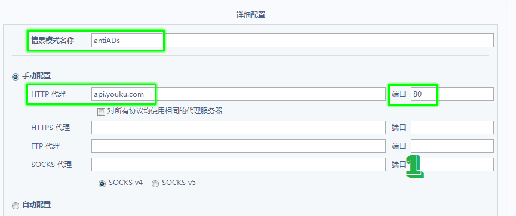
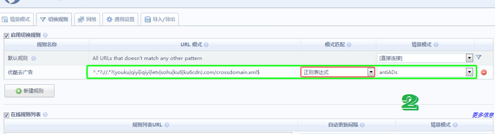
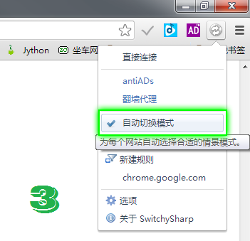

有时优酷页面播放可能会出现 错误代码：2003 的现象，有时与switchysharp的配置明明是正确的，但扩展的图标上仍出现 issu 字样，这些问题有很大可能是由于缓存问导致的(根据过往经验，优酷官网去广告很少出问题)。
每次扩展启动或代理模式变动时自动清理缓存能较好的解决这个问题，但对于经常玩需大量加载网络文件的在线flash游戏的网友而言，自动清理缓存意味着每次开启浏览器后都要重新加载才能进行游戏，不过现在你有得选了。
注：为保证去广告功能的正常发挥，使用科学上网模式时，请在代理扩展(如：Proxy SwitchySharp)中加入如下规则：
1、需代理的地址正则表达式： ( <-- 此项有改动 V1.2.06 -- )
2、该地址指向的代理服务器：



服务器在国外，因此在线模式的载入速度会很慢，如无特殊情况，请使用离线播放器。
本扩展是一款由睡虫子开发的旨在屏蔽国内主流视频网站视频播放前烦人广告的chrome扩展。
本扩展的实现原理类似于之前由 鲁夫的爱 博主所开发的广告屏蔽扩展OpenGG.Clean.Player，两者都是通过修改视频网站的播放器以达到屏蔽的目的。但两者又有一些区别，主要区别在于：